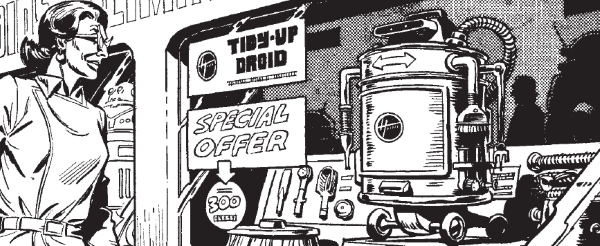

An anthology series of one-offs with a robotic theme, introduced by Ro-Jaws (from Ro-Busters).
Art by Dave Gibbons
| Story Title | Parts | Pages | w indicates a wraparound coverCovers | Year(s) | Issues | Writer | Artist | Colourist | Letterer |
|---|---|---|---|---|---|---|---|---|---|
Supertitled "Ro‑Jaws"The Inside Story | 1 | 3 | 0 | 1979 | Reprints: M263144 | Pat Mills | Kevin O'Neill | [b&w] | John Aldrich |
| Damien, The Child Of Tomorrow | 1 | 4 | 0 | 1980 | 147 | Kelvin Gosnell, Prigmore | Mike White | [b&w] | John Aldrich |
| It's A Knockout | 2 | 6 | 0 | 1980 | 148-149 | Oleh | Jose Casanovas | [b&w] | Peter Knight |
| The Revolt Of The Tick Tock Monkey-Bomb | 1 | 3 | 0 | 1980 | Reprints: X23157 | Gary Rice | Dave Gibbons | [b&w] | Tony Jacob |
| Droids Are Dispensable | 1 | 3 | 0 | 1980 | 161 | Gary Rice | Brett Ewins | [b&w] | Tony Jacob |
| The Robot Revolution | 1 | 3 | 0 | 1980 | SFS3 | Gary Rice | Trevor Goring | [b&w] | John Aldrich |
| The Wanderer | 1 | 2 | 0 | 1980 | SFS3 | Kev F Sutherland | Steve Kyte | [b&w] | unknown |
| Ye First Robote | 1 | 3 | 0 | 1980 | Reprints: M332 (supplement)166 | Gary Rice | Brendan McCarthy | [b&w] | Tom Frame |
| The Killer In The Cab | 1 | 4 | 0 | 1980 | Reprints: 532 M259 170 | Alan Moore | John Richardson | [b&w] | Tom Frame |
| The Contender | 1 | 5 | 0 | 1980 | 175 | Gary Rice | Brett Ewins | [b&w] | Jack Potter |
| [The Robo Shrink] | 1 | 3 | 0 | 1980 | 176 | Gary Rice | John Higgins | [b&w] | John Aldrich |
| The Dating Game | 1 | 4 | 0 | 1980 | Reprints: M4.15176 | Alan Moore | Dave Gibbons | [b&w] | Tom Frame |
| The Tidy-Up Droid | 1 | 4 | 0 | 1980 | Reprints: M332 (supplement)181 | Gary Rice | Dave Gibbons | [b&w] | Tom Frame |
| Tomorrow Brings Doom | 1 | 4 | 0 | 1980 | Reprints: M262183 | Gary Rice | Dave Gibbons | [b&w] | John Aldrich |
| Night Of The Werebot | 1 | 4 | 0 | 1980 | Reprints: X23184 | Gary Rice | Dave Gibbons | [b&w] | John Aldrich |
| Miracle In Slum Alley | 1 | 5 | 0 | 1980 | Reprints: M332 (supplement)188 | Gary Rice | Ian Gibson | [b&w] | John Aldrich |
Linked to Abelard SnazzFinal Solution | 2 | 8 | 0 | 1980 | 189-190 | Alan Moore | Steve Dillon | [b&w] | John Aldrich |
| Spirit Of Vengeance | 1 | 4 | 0 | 1981 | 196 | Gary Rice | Dave Gibbons | [b&w] | Dave Gibbons |
| The Pirate And The Polydroid | 1 | 4 | 0 | 1981 | 2KA'82 | Steve Parkhouse | Ewan Smith | [b&w] | Tom Frame |
| Silicon Soul | 1 | 4 | 0 | 1982 | 2KA'83 | Gary Rice | Alan Langford | [b&w] | Jack Potter |
| >> Text Stories << | |||||||||
No supertitleHuman on my Back | 1 | 3 | 0 | 1980 | 2KA'81 | unknown | unknown | [b&w] | n/a |
| The Volunteer | 1 | 4 | 0 | 1981 | 2KA'82 | unknown | unknown | [b&w] | n/a |
| year | episodes | pages |
| 1977 | 0 | 0 |
| 1978 | 0 | 0 |
| 1979 | 1 | 3 |
| 1980 | 18 | 65 |
| 1981 | 2 | 8 |
| 1982 | 1 | 4 |
| 1983 | 0 | 0 |
| 1984 | 0 | 0 |
| 1985 | 0 | 0 |
| 1986 | 0 | 0 |
| 1987 | 0 | 0 |
| 1988 | 0 | 0 |
| 1989 | 0 | 0 |
| 1990 | 0 | 0 |
| 1991 | 0 | 0 |
| 1992 | 0 | 0 |
| 1993 | 0 | 0 |
| 1994 | 0 | 0 |
| 1995 | 0 | 0 |
| 1996 | 0 | 0 |
| 1997 | 0 | 0 |
| 1998 | 0 | 0 |
| 1999 | 0 | 0 |
| 2000 | 0 | 0 |
| 2001 | 0 | 0 |
| 2002 | 0 | 0 |
| 2003 | 0 | 0 |
| 2004 | 0 | 0 |
| 2005 | 0 | 0 |
| 2006 | 0 | 0 |
| 2007 | 0 | 0 |
| 2008 | 0 | 0 |
| 2009 | 0 | 0 |
| 2010 | 0 | 0 |
| 2011 | 0 | 0 |
| 2012 | 0 | 0 |
| 2013 | 0 | 0 |
| 2014 | 0 | 0 |
| 2015 | 0 | 0 |
| 2016 | 0 | 0 |
| 2017 | 0 | 0 |
| 2018 | 0 | 0 |
| 2019 | 0 | 0 |
| 2020 | 0 | 0 |
| 2021 | 0 | 0 |